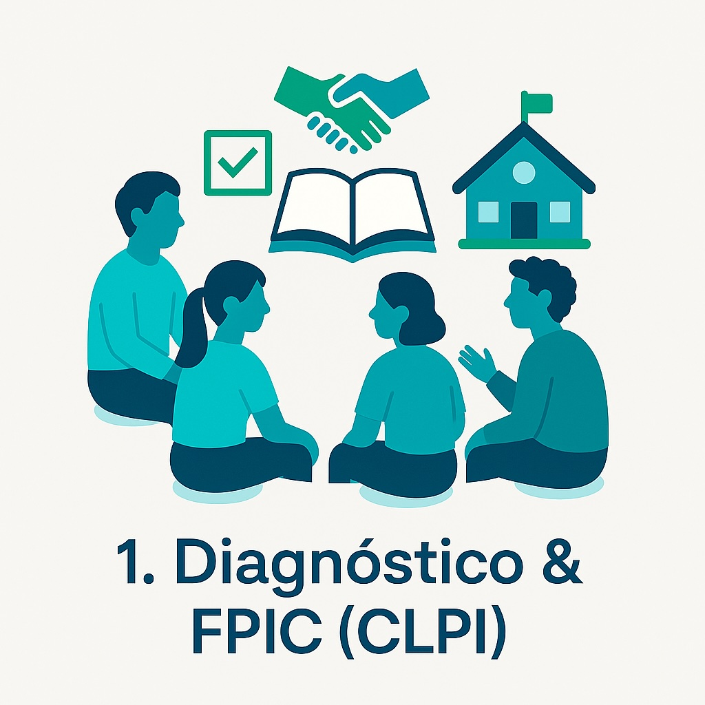
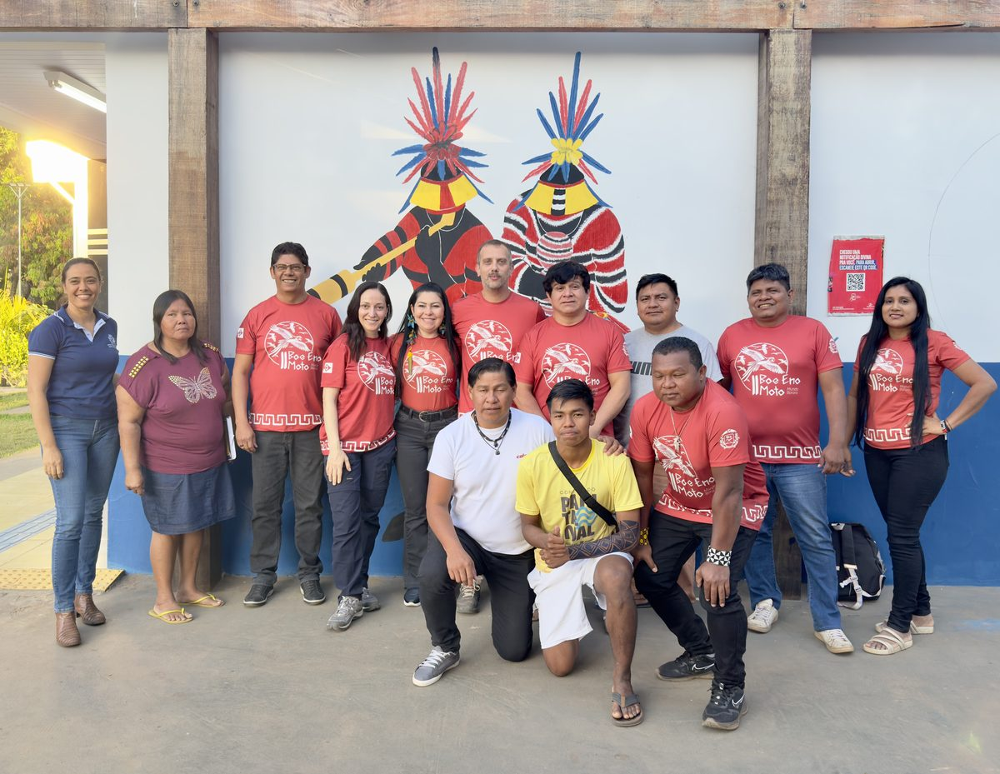
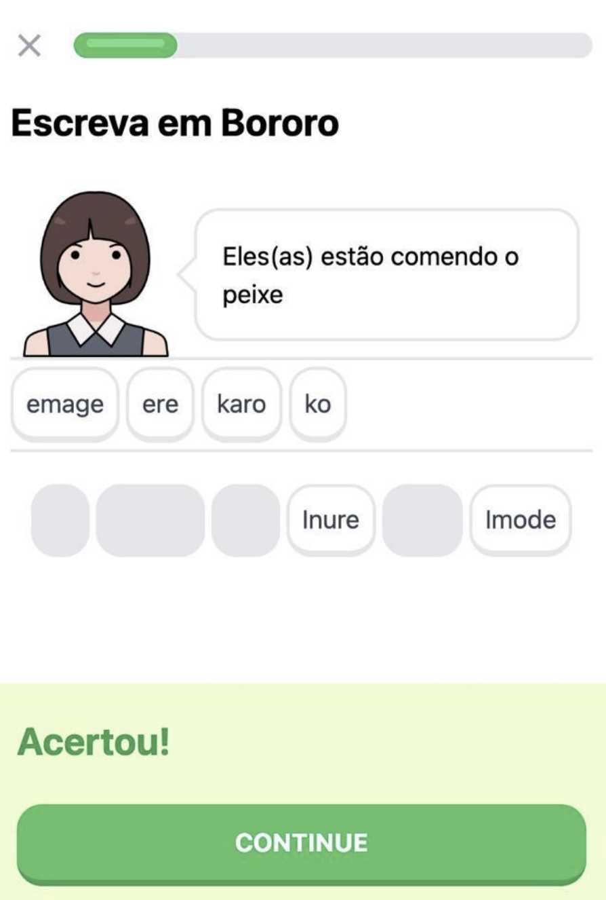

Plataforma de Línguas Indígenas
Línguas vivas, culturas fortalecidas. Revitalizamos e documentamos línguas indígenas brasileiras através de tecnologia, educação e governança comunitária.

Explorar as plataformas · Seja parceiro
Por que agir agora?
Das mais de 270 línguas indígenas faladas no Brasil, muitas enfrentam risco de extinção. Cada língua perdida é um universo de conhecimento que desaparece.
Línguas em risco. Mais de 40% das línguas indígenas brasileiras estão ameaçadas de extinção nas próximas décadas.
Materiais escassos. A maioria das línguas não possui materiais didáticos adequados para uso nas escolas indígenas.
Transmissão ameaçada. Jovens indígenas frequentemente perdem contato com suas línguas ancestrais durante a educação formal.
Como trabalhamos
Um processo colaborativo que coloca as comunidades no centro de cada decisão.

Acordos de CLPI garantem que as comunidades controlam todo o processo e seus dados.
Documentação linguística colaborativa com falantes, anciãos e educadores locais.
Dicionários, corpus linguísticos e ferramentas de aprendizagem acessíveis online.
Modelos de linguagem treinados localmente para auxiliar na geração de conteúdo.
Livros, cartilhas e recursos impressos para uso em sala de aula.
Capacitação contínua para educadores indígenas utilizarem os recursos.


Ética e respeito
Nosso trabalho é guiado por princípios rigorosos de consentimento e proteção de conhecimentos tradicionais.
- CLPI/FPIC. Consentimento Livre, Prévio e Informado em todos os projetos.
- Direitos de dados. Cada comunidade define suas próprias regras de acesso.
- Proteção sensível. Conteúdos sagrados protegidos por padrões antropológicos.
- DOI e citação. Todos os recursos recebem identificadores digitais permanentes.
Escola Enawenê-Nawê
A parceria com a Escola Estadual Indígena Enawenê-Nawê resultou na criação de materiais didáticos bilíngues utilizados diariamente por professores e alunos, fortalecendo a transmissão da língua para as novas gerações.
"Os materiais transformaram nossa forma de ensinar. Agora nossos alunos podem aprender em sua própria língua."
— Michel Correa, Diretor Escolar
Explore as línguas
Dicionários, corpus linguísticos e materiais educacionais para cada comunidade parceira.

- Bororo (Boe Eno Moto) (no ar): dicionário completo; corpus (UD + paralelo); etnobotânica e fauna; materiais escolares.
- Enawenê-Nawê (no ar): dicionário; fauna e flora; corpus.
- Xavante (em breve): dicionário; fauna.
Aplicativo de aprendizado de línguas
Jogos interativos, exercícios de fala com IA e atividades de tradução para aprender línguas indígenas. Ver o aplicativo Bilingo.





Quem nos apoia


Interessado em se tornar um parceiro? Entre em contato.